Manual do painel
Como cadastrar categorias, produtos e mídias do cardápio
Dona Dôra · Cardápio digital
Versão 1 · outubro de 2026
Como cadastrar categorias, produtos e mídias do cardápio
Dona Dôra · Cardápio digital
Versão 1 · outubro de 2026
Acesse /admin no endereço do cardápio. A tela de entrada pede o e-mail e a
senha do painel.
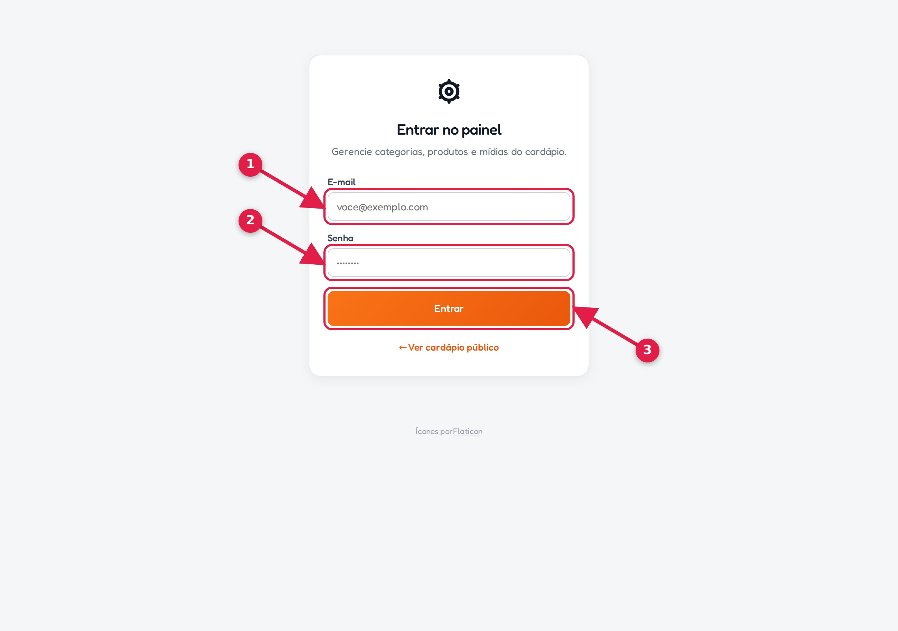
Se a senha estiver errada cinco vezes seguidas, o acesso fica bloqueado por 10 minutos naquele aparelho.
Depois de entrar, o topo do painel tem o menu e o botão de sair.
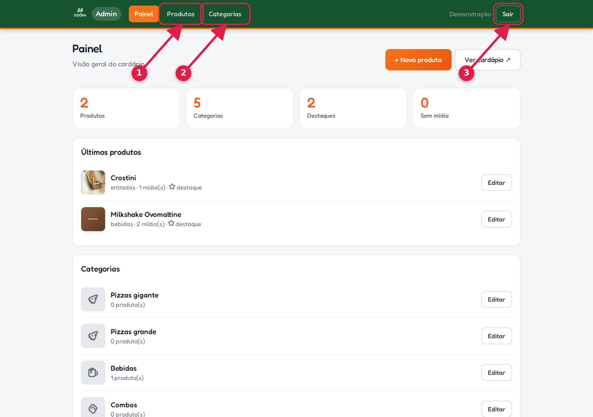
| Menu | Para que serve |
|---|---|
| Painel | Visão geral com o resumo do cardápio. |
| Produtos | Criar, editar, esconder e ordenar os produtos. |
| Categorias | Criar as seções do cardápio (pizzas, massas, bebidas...). |
Em Categorias, o formulário do topo cria uma seção nova. O nome e o identificador aparecem na lista e no cardápio.
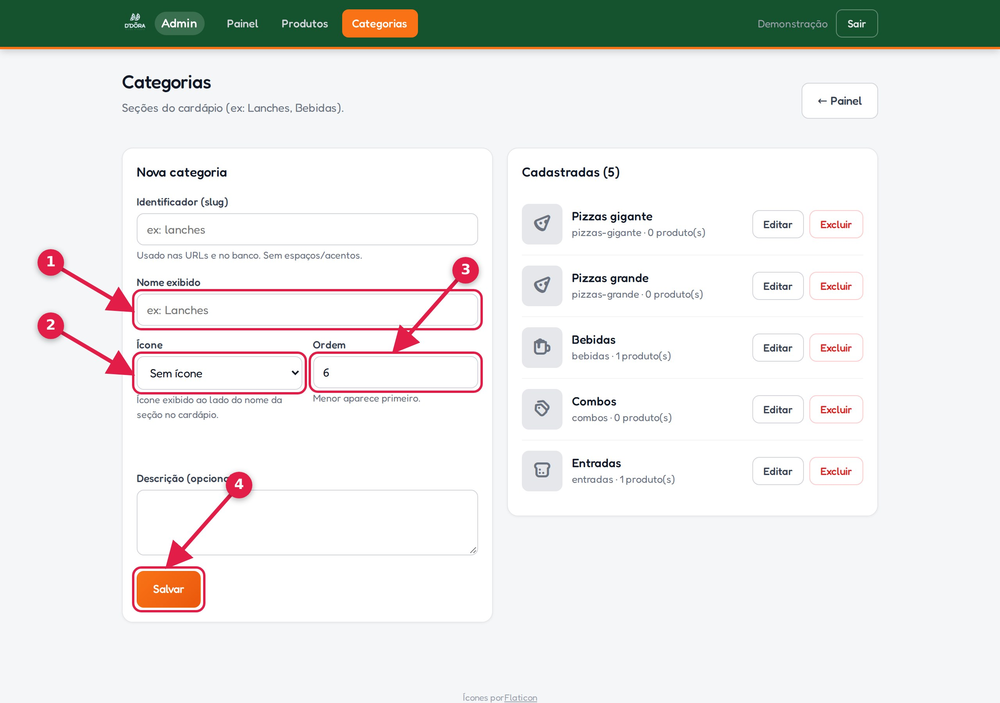
pizzas-salgadas).A lista abaixo do formulário mostra as categorias já cadastradas.
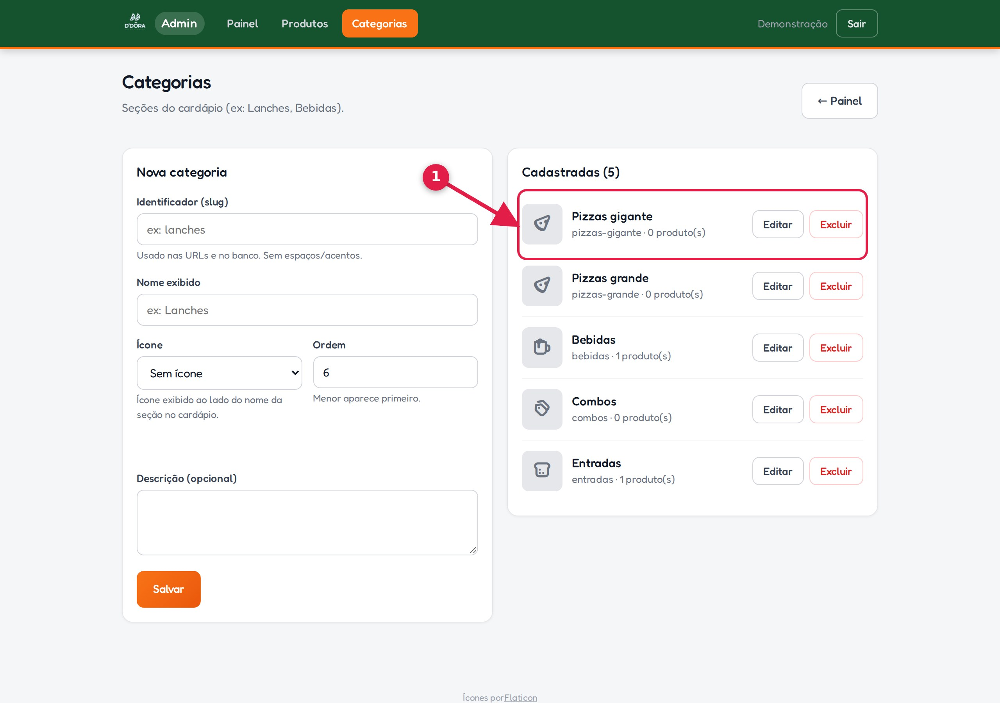
Em Produtos ficam todos os itens cadastrados, com busca, filtros e o botão de criar um novo.
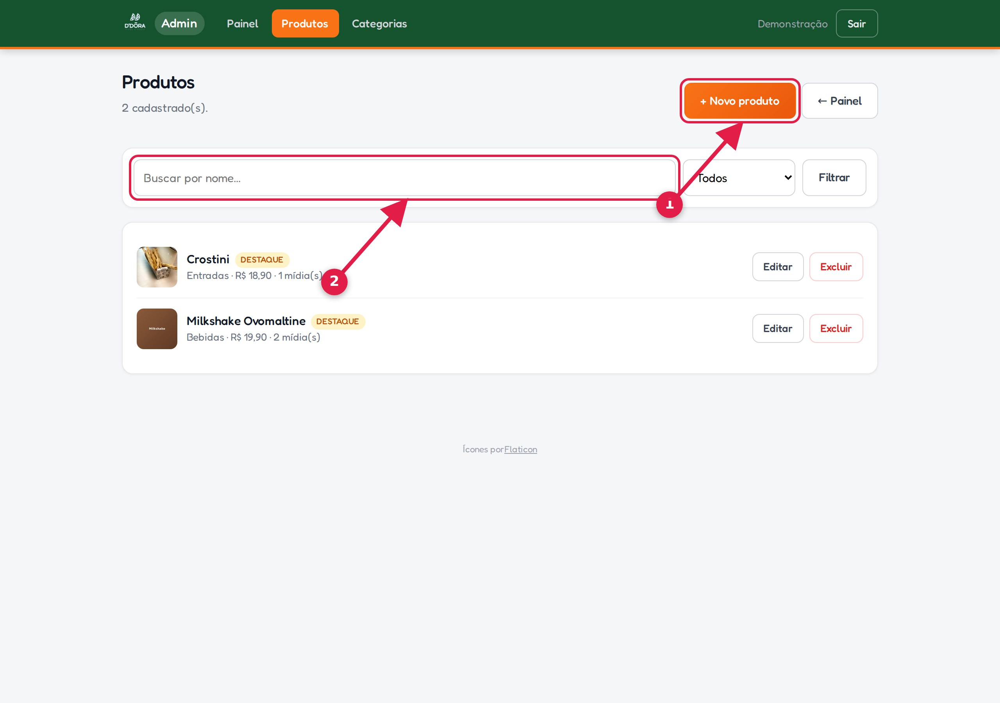
O formulário tem os dados principais. Os campos com * são obrigatórios.
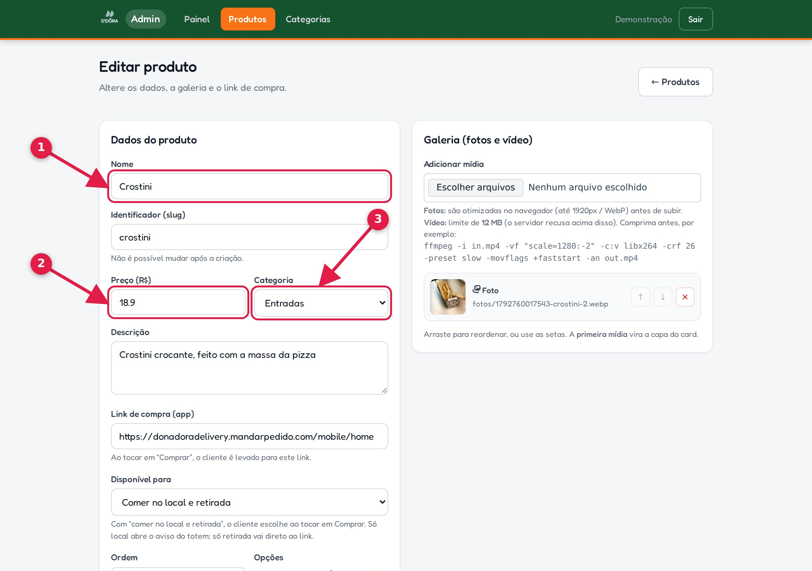
28.90).O campo Disponível para decide o que acontece quando o cliente toca em Comprar.
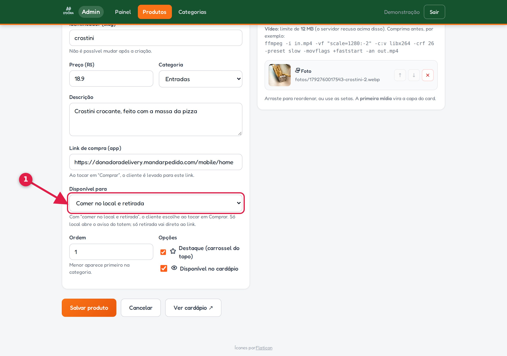
| Opção | O que o cliente vê |
|---|---|
| Comer no local e retirada | Uma pergunta: “O pedido é para comer no local ou para retirada?”. |
| Somente retirada (link do app) | O link de compra abre direto, sem pergunta. |
| Somente comer no local (totem) | Aviso de que pedidos no local são feitos no totem, com foto do totem. |
Na seção Galeria, adicione as fotos do produto. A primeira mídia vira a capa do card.
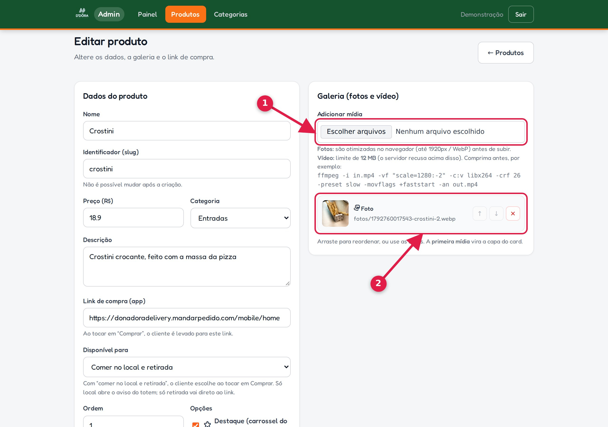
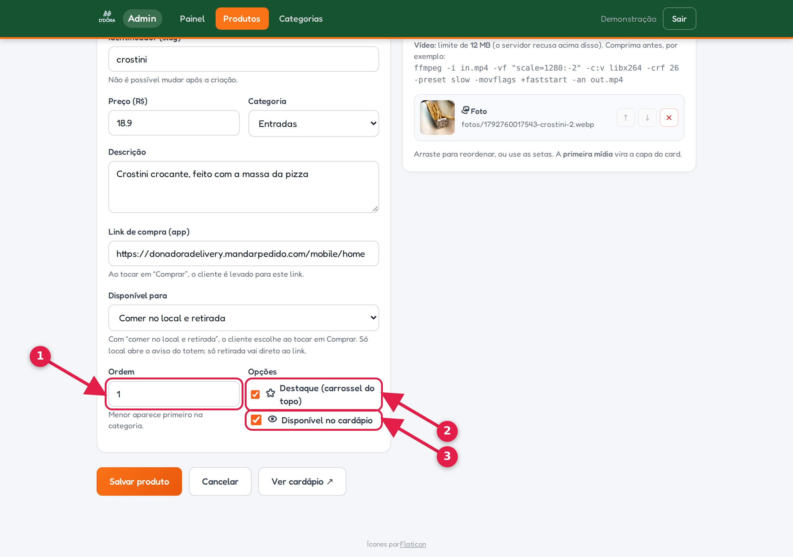
No cardápio público, cada produto tem o botão Comprar.
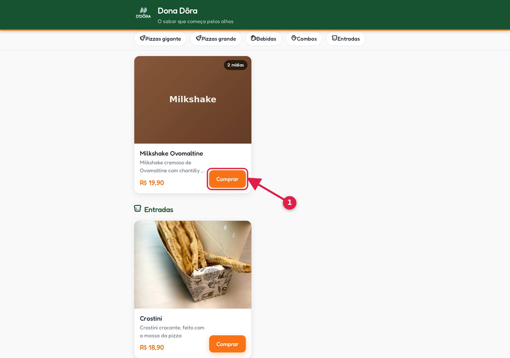
Quando o produto atende os dois modos, aparece a pergunta:
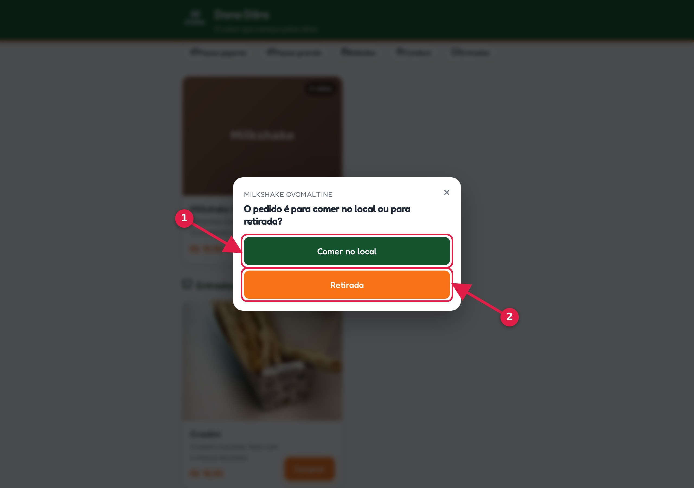
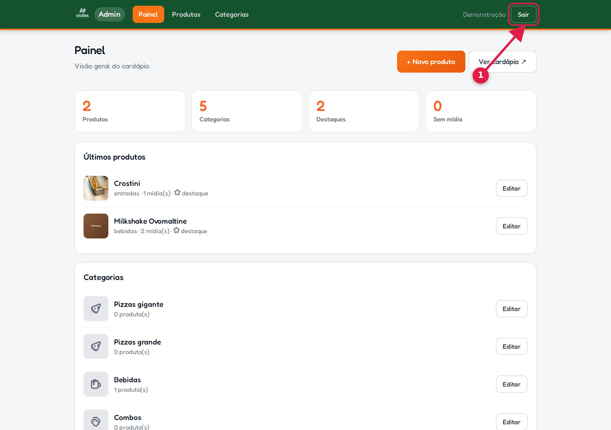
Sempre saia ao usar um computador compartilhado.
| Situação | O que fazer |
|---|---|
| Salvei, mas o cardápio ainda está igual. | Espere até 30 segundos e atualize a página. Se continuar, confira se o botão Salvar foi acionado. |
| O produto não aparece. | Confira se Disponível no cardápio está marcado e se há uma categoria escolhida. |
| O vídeo foi recusado. | O limite é 12 MB. Comprima o arquivo antes de enviar. |
| A senha não funciona. | Após 5 erros o acesso é bloqueado por 10 minutos. Aguarde e tente de novo. |
| Preciso esconder um item sem apagar. | Desmarque Disponível no cardápio e salve. |
Manual gerado a partir do próprio painel. Se um botão mudar de lugar, peça a atualização
dos prints: o comando npm run docs:prints refaz as imagens e este PDF.